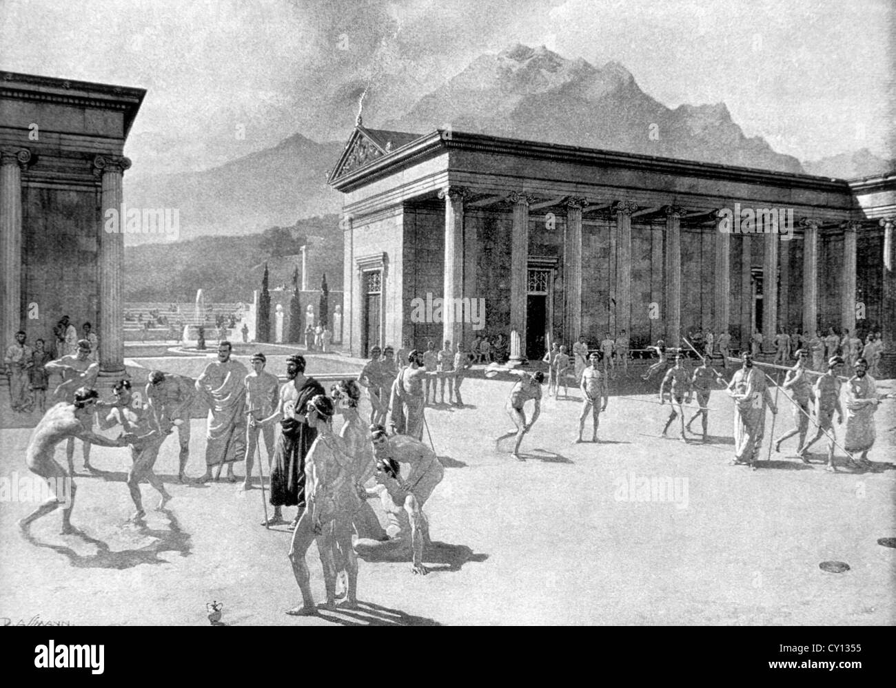
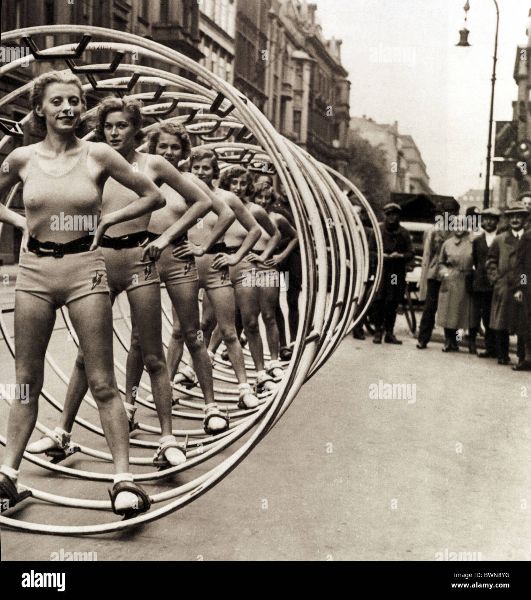
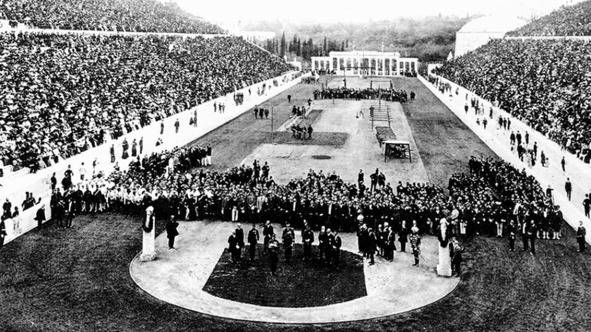

Des gymnases antiques aux podiums olympiques modernes
De la Grèce ancienne aux Jeux Olympiques contemporains, la gymnastique a traversé plus de deux millénaires d'histoire, se transformant d'une pratique philosophique en discipline sportive mondiale.
La gymnastique trouve ses racines dans la Grèce antique, où les exercices physiques constituaient un pilier fondamental de l'éducation. Le mot « gymnastiké » dérivait du grec « gymnos » — nu — car les athlètes s'entraînaient sans vêtements dans des lieux dédiés appelés gymnasia.
Philosophes et pédagogues, de Platon à Aristote, défendaient l'entraînement du corps comme nécessaire à l'équilibre de l'esprit. Les exercices pratiqués comprenaient la course, le saut, la lutte, le lancer du disque et des formes primitives d'acrobaties.
« Un corps sain est le premier des biens. »— Platon

C'est en Allemagne que la gymnastique moderne prend forme grâce à Friedrich Ludwig Jahn, surnommé le « Turnvater » — père de la gymnastique. En 1811, il ouvre le premier Turnplatz, terrain de gymnastique en plein air à Berlin, et invente plusieurs agrès encore utilisés aujourd'hui : la barre fixe, les barres parallèles et le cheval d'arçons.
En parallèle, le Suédois Per Henrik Ling développe une approche plus médicale et thérapeutique, donnant naissance à la gymnastique suédoise, axée sur la santé et la mobilité. Ces deux écoles rivales façonneront l'évolution du sport tout au long du siècle.

En 1881, la Fédération Européenne de Gymnastique est fondée à Liège, Belgique. Elle deviendra la Fédération Internationale de Gymnastique (FIG) en 1921, faisant d'elle la plus ancienne fédération sportive internationale encore active.
La FIG unifie les règles, codifie les épreuves et organise les premières compétitions continentales. Elle compte aujourd'hui plus de 140 fédérations nationales membres et supervise l'ensemble des disciplines gymniques reconnues au niveau mondial.
Lors des premiers Jeux Olympiques modernes à Athènes en 1896, la gymnastique est l'une des neuf disciplines au programme. Les compétitions masculines incluent la barre fixe, les barres parallèles, le cheval d'arçons, les anneaux et la corde à grimper.
Les femmes font leur entrée aux JO en 1928 à Amsterdam, initialement dans des épreuves par équipes, puis individuellement à partir de 1952. Ce n'est qu'en 1984 que la gymnasique rythmique intègre le programme olympique, suivie du trampoline en 2000 à Sydney.

Le 18 juillet 1976 à Montréal marque un tournant dans l'histoire du sport mondial. La Roumaine Nadia Comăneci, âgée de seulement 14 ans, obtient la première note parfaite — 10.00 — jamais accordée aux Jeux Olympiques.
Le tableau d'affichage, non prévu pour afficher un tel score, indique « 1.00 ». Elle obtiendra en tout sept notes parfaites lors de ces Jeux, remportant trois médailles d'or. Son passage aux barres asymétriques reste l'un des moments les plus mythiques de l'histoire olympique.
« Je ne pensais pas à la perfection. Je pensais juste à bien faire ce que je savais faire. »— Nadia Comăneci